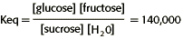

Energy, Enzymes, and Catalysis Problem Set
Problem 2 Tutorial: Equilibrium constant for sucrose hydrolysis.
The equilibrium constant for the conversion of the disaccharide sucrose to the simple sugars glucose and fructose is 140,000. What can you conclude about the reaction: sucrose + H2O  glucose + fructose?
glucose + fructose?
Reaction equations
The equation for the chemical reaction described in this problem is as follows:
This is a hydrolysis reaction. The disaccharide glucose is hydrolyzed to the two monosaccharides glucose and fructose. Biological hydrolysis reactions are almost always spontaneous (exergonic).
The balance between the forward and reverse reactions is known as the chemical equilibrium, which is defined as the ratio of the concentration of products and reactants at equilibrium when there is no further change in concentrations.
For this reaction,

Free energy and chemical equilibrium
This chemical reaction can run in both the forward and reverse directions, but the products glucose and fructose are at a lower energy level than the reactant sucrose.
The difference between a spontaneous and nonspontaneous reaction can be distinguished by the following relationships:
| Spontaneous Reaction | Nonspontaneous Reaction |
|---|---|
| Keq > 1 | Keq < 1 |
 G < 0 G < 0 |
G > 0 |
| Exergonic | Endergonic |
| Forward reaction favored | Reverse reaction favored |
The hydrolysis of sucrose
This is a spontaneous reaction beginning with sucrose because Keq > 1.


Department of Biochemistry and Molecular Biophysics
University of Arizona
Revised: October 2004
Contact the Development Team
http://www.biology.arizona.edu
All contents copyright © 1996. All rights reserved.